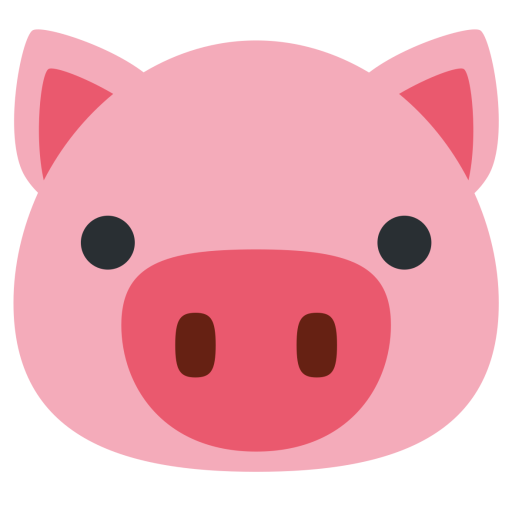
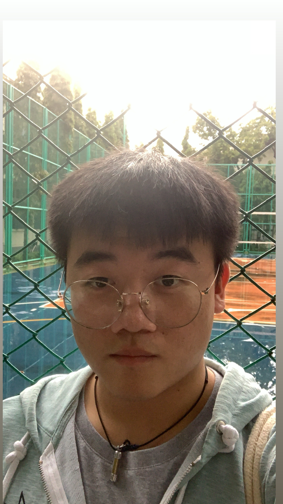

This web page is for introduce myself.
Introduce myself
My name is Supakrit Nithikethkul. I am junior year, in Thammasat University, School of Engineering and my major in computer engineering. I desire to learn and practice more innovative and integrated technology in cooperated organizations. I have been participating in the Alzheimer’s disease classification from OCT (Optical Coherence Tomography) image project for 4 months (on 11-01-2023 to 15-5-2023). In this laboratory, I have learned many new things such as sophisticated specific plans for specific tasks. This is the good reason I am proud to find new solutions, in the same time, I enjoy to share my plans and acknowledges with my team in various perspectives. From my project experience, I understand that every step in the workflows are important. The work life cycles are very useful, and they will drive the project to go faster and more productive. To reach the real and main requirements collected, I have strong ambition to keep a professional mindset and ideas within my professional team then I developed my work according to the optimized to requirements.

Name: Supakrit Nithikethkul
My nickname: Krit
My Student ID: 6410615139
My contact
My interest
Activity
| Year | Event | Details |
|---|---|---|
| 1st | Freshy Game | Volleyball player |
| 2nd | TESA Top gun rally |
Actualy, its good!
|
| 3st | Open house staff |
Thank you for visiting my pages
last update 19/11/2566